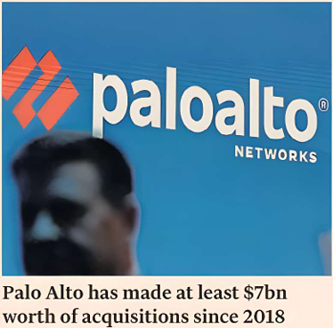

OLIVER BARNES — NEW YORK
TIM BRADSHAW — LONDON

Palo Alto Networks has agreed a $25bn takeover of Israeli rival CyberArk Software, marking the latest mega-deal of the year in the increasingly active cyber security sector.
The cash-and-stock deal announced yesterday is Palo Alto’s biggest acquisition in a spending spree led by chief executive Nikesh Arora, a former SoftBank executive who was once hailed as a potential successor to the conglomerate’s chief Masayoshi Son.
The Silicon Valley group has struck at least $7bn worth of bolt-on acquisitions since Arora took over in 2018, according to Financial Times calculations.
The growing threat of hackers looking to breach companies’ networks has been a boon for cyber start-ups as well as dealmaking in the sector.
Earlier this year, Google owner Alphabet agreed to buy cloud security provider Wiz in a $32bn deal, the biggest of the year so far. Cisco’s $28bn acquisition of Splunk also closed in 2024.
Palo Alto’s recent dealmaking has focused on building out its expertise in cyber security to address artificial intelligence-driven threats.
Palo Alto paid just over $1.1bn for IBM’s QRadar software-as-a-service assets in 2024 and earlier this year struck an estimated $700mn deal for cyber security start-up Protect AI.
CyberArk, which serves more than 10,000 clients globally, fills a gap in Palo Alto’s product line-up.
The Israeli group specialises in a type of cyber protection known as identity security and privileged access management, which helps corporations protect against breaches of sensitive and confidential data by restricting who has access to it.
The deal will help Palo Alto pitch corporate buyers with an end-to-end security portfolio, which helps to secure access to networks for not just humans but also so-called AI “agents”, according to analysts.
“Our market entry strategy has always been to enter categories at their inflection point, and we believe that moment for identity security is now,” said Arora. “The rise of AI and the explosion of machine identities have made it clear that the future of security must be built on the vision that every identity requires the right level of privilege controls.”
Under the deal, CyberArk investors will receive $45 in cash and just over 2.2 Palo Alto shares for every common stock in the Israeli group, valuing its shares at a 26 per cent premium to the 10-day average of the stock to July 25.
Shares in CyberArk jumped on news of the deal and are up almost 70 per cent over the past year. Palo Alto’s market value stood at about $120bn yesterday after its stock fell 8 per cent following the deal’s announcement.